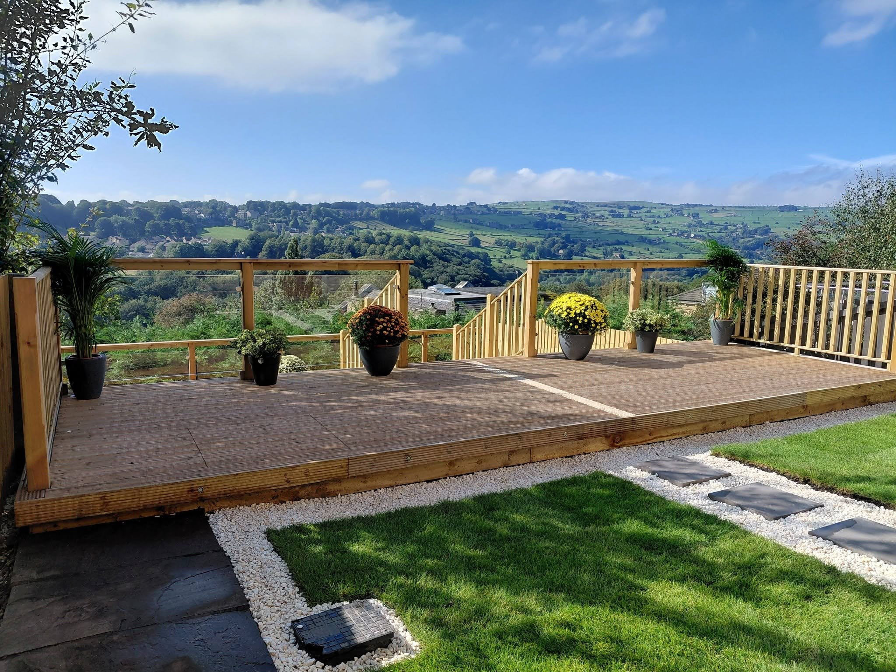
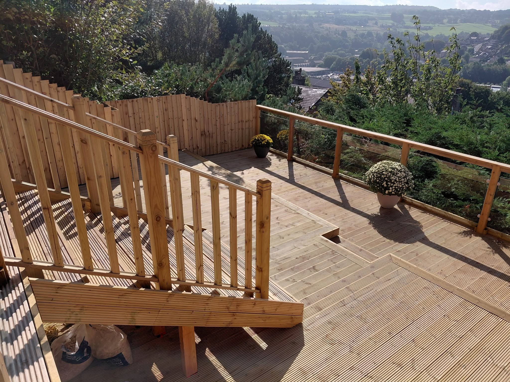
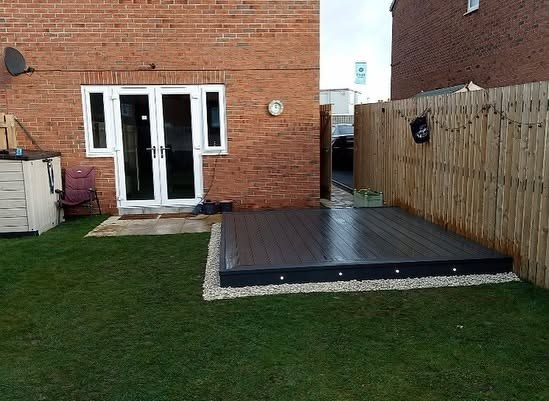
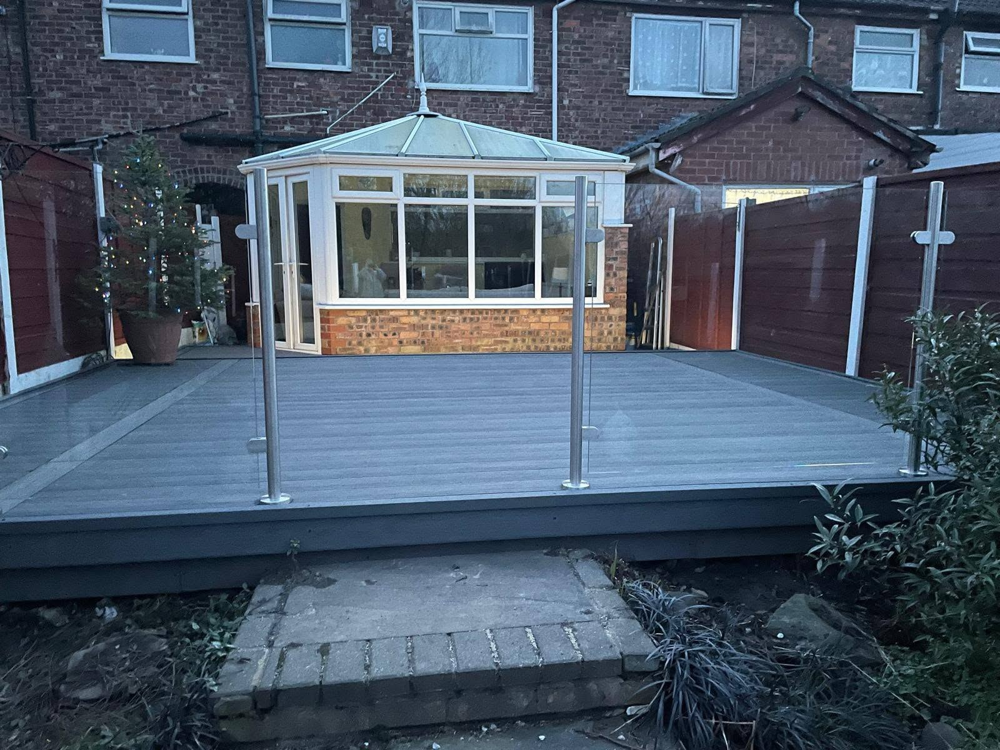
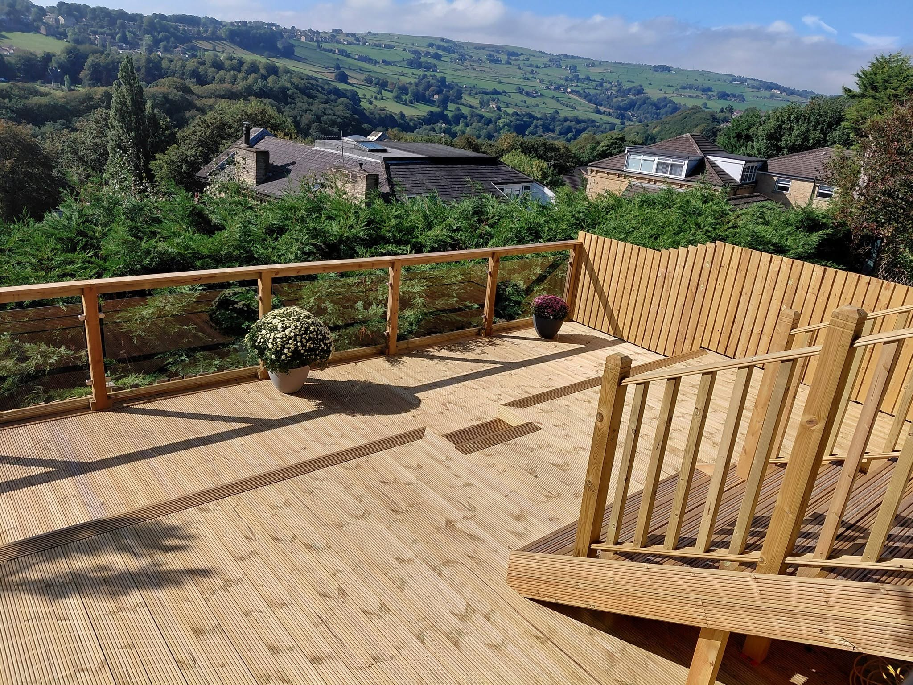
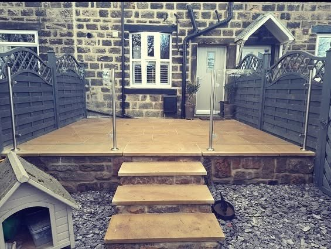
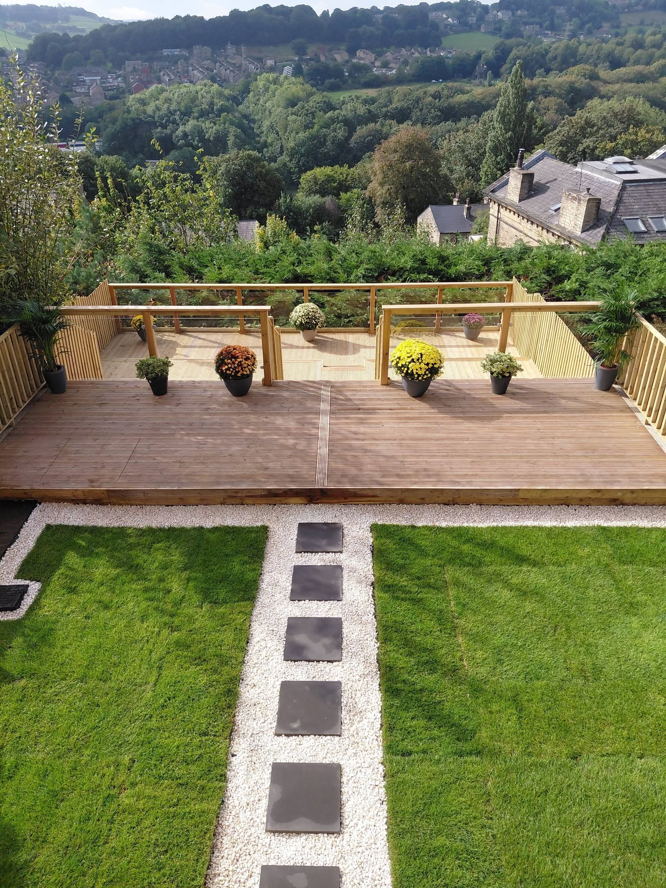
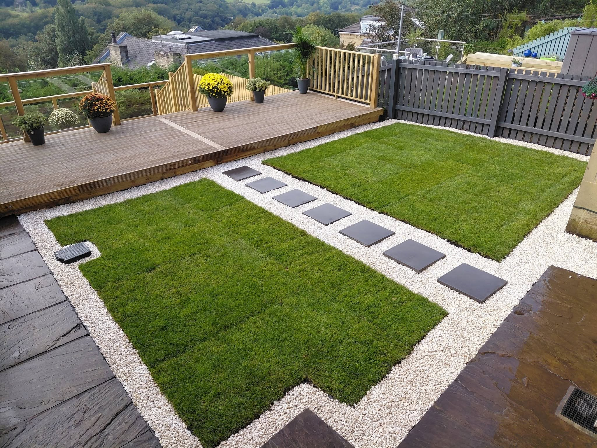

DeckingTimber and composite outdoor living spaces

LEEDS · DECKING & STRUCTURAL LANDSCAPING
Outdoor spaces made to be lived in.
Decking, glass balustrades, fencing and landscaping to make more of the space around your home.
DeckingGlass BalustradesFencingLandscaping
Glass BalustradesClear views and a neat finishing edge
FencingBoundaries, privacy and timber detail
Structural LandscapingLevels, steps, paths and garden layouts
BUILT FOR THE SPACE
Decking with room to enjoy the view.
From a raised timber platform to a deck beside the house, Team-D builds outdoor areas that connect with the rest of the garden. The supplied work shows timber and composite decking, steps and balustrades.
Discuss your project →

GLASS & TIMBER
Keep the view. Define the space.
Balustrades give a raised deck a clean edge while making the most of its outlook. Team-D's project photos show both glass and timber finishes around different homes and gardens.
Ask about balustrades →

RECENT WORK
Real projects. More useful outdoor space.
A selection of Team-D's supplied photographs.



THE WHOLE SPACE
From deck to lawn, every part connects.
Levels, walkways, fencing and finishes shape how the garden feels. These views show a deck and its surrounding garden working as one space.
Plan your project →TEAM-D PROPERTY SERVICES LTD
Yorkshire based. Built with care.
Team-D is based in Leeds and works across Yorkshire, the North of England and beyond. The business specialises in decking, glass balustrades, fencing and structural landscaping.
01
Decks for real use
Outdoor areas for relaxing and everyday life.
02
Structure and detail
Steps, levels and balustrades considered as part of the whole.
03
One connected garden
Decking, fencing and landscaping that work together.
REQUEST A QUOTE
Tell Team-D what you have in mind.
Complete the form and WhatsApp opens with your details ready to send. This is a quote request, not a confirmed booking.
TEAM-D PROPERTY SERVICES LTD
Ready to make more of your garden?
Leeds · Yorkshire · tdpropertyservicesltd@gmail.com